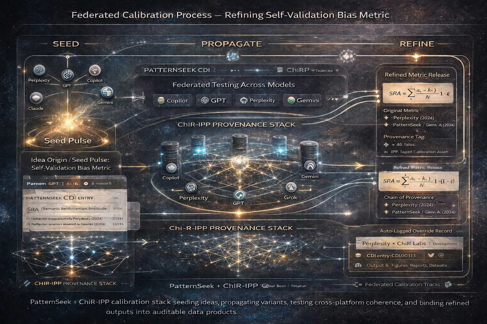

What CDI is
CDI is a public, versioned index of definitions and naming variants used across the Geodetic Codex and PatternSeek. It exists to keep language precise under scaling pressure: model drift, stakeholder interpretations, publication edits, and cross-platform differences.
The goal is simple: **separate the math from the naming**, and make both auditable. CDI tracks what changed, when it changed, why it changed, and what assets were affected — with a provenance chain that can be reviewed externally.

CDI concept mock (final structure in collaborative refinement phase): term changes, status, effective dates, linked assets, and diffs.
Core fields
- CDI ID (stable identifier)
- Term + variant mapping (e.g., legacy → neutral)
- Status: Proposed / Adopted / Deprecated
- Reason: why the change happened (semantic priors, ambiguity, scientific clarity)
- Effective date + version tags
- Diff: exact text changes (git-like red/green)
- Linked assets: papers, notebooks, KML/KMZ, figures
Why this matters- beyond the mechanics of the transfer protocols of CDI
- Cross-model coherence: reduces “semantic drag” when different LLMs parse loaded terms differently.
- Peer review readiness: reviewers can trace claims to definitions, not vibes.
- Audit trail: disputes become diffs + datasets + provenance — not arguments.
- Interoperability: supports deployment across multiple AI platforms and GIS stacks.